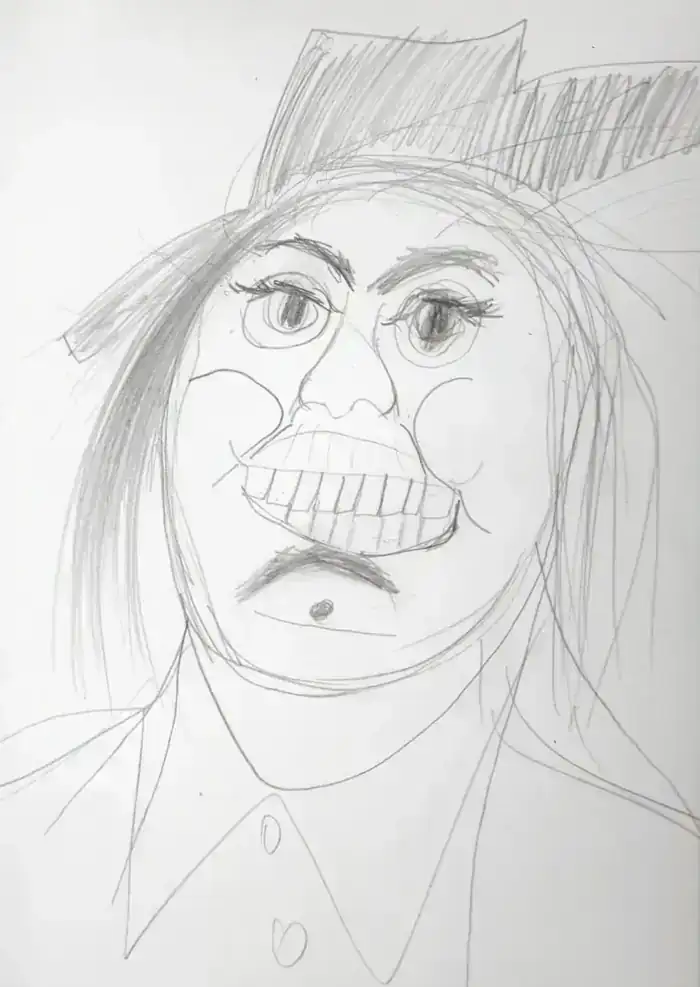
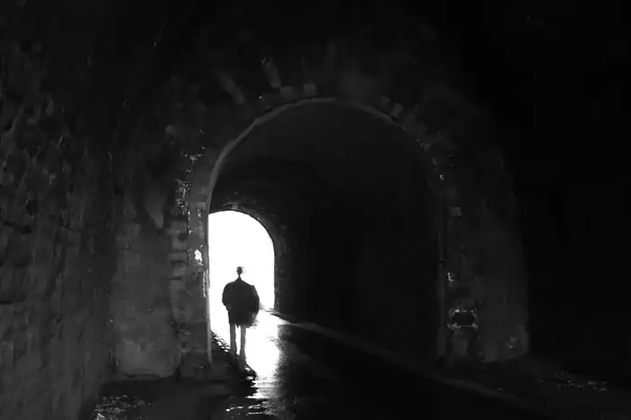

The report
A near-death experience is the account given by someone who came close to death, or believed they did, and returned. The core features were catalogued by Bruce Greyson into a scale: a sense of peace, separation from the body, a tunnel or darkness, light, meeting figures, a life review, and a decision or barrier that ends it. Between 10% and 20% of cardiac-arrest survivors report something in that family.
Maps, diagrams and images




The accounts are not random. They cluster, they are reported across cultures, and the people who have them usually describe them as more real than ordinary experience. That consistency is what makes them worth studying rather than dismissing.
The problem
The brain during cardiac arrest is not idle: it is hypoxic, acidotic and undergoing a chaotic cascade. Any explanation has to account for vivid, structured, remembered experience during a period when cortical activity is grossly abnormal — and for the fact that most survivors report nothing at all.
The leading accounts are physiological: hypoxia and hypercapnia, surges of neurotransmitters during reperfusion, temporal-lobe activity, and REM intrusion into a failing brain. None of them explains every feature, and none has been demonstrated to produce the full syndrome in a controlled setting. The fact that ketamine and some seizures produce similar experiences is evidence about mechanism, not about what is on the other side.
Documented: the experiences occur, cluster into recognisable features, and are reported across cultures.
Not established: veridical perception. The AWARE study placed hidden images in resuscitation rooms; the one widely publicised case of a patient reporting a target was not confirmed as a hit.
Not established: that the experiences are of anything outside the brain. No test has yet distinguished a dying-brain account from a survival account, and the burden of proof sits with the stronger claim.
Culturally shaped: the content tracks the culture — tunnels and light in the West, judgement and ancestors elsewhere — which is what a constructed experience would do.
Why it is filed as live debate
Because the phenomenon is documented and the interpretation is not, and because the honest position — this is a real experience of a brain under extreme stress, whose content we cannot yet fully explain — is uncomfortable for both camps. The archive does not pretend the question is closed in either direction.
Open resources on this topic
- BookThe return from silence : a study of near-death experiences — Rogo, D. Scott · 1989 (Internet Archive, free to read)
- BookNear death experiences: a multidisciplinary hypothesis. — ['Bokkon, Istvan', 'Mallick, Birendra N.', 'Tuszynski, Jack · 2013 (Internet Archive, free to read)
- BookMessages from the light : true stories of near-death experiences and communication from the other side — Coppes, Christophor · 2004 (Internet Archive, free to read)
- PapersOpen-access articles: DOAJ · PubMed Central · Internet Archive Scholar
- BooksPublic-domain and borrowable copies: Open Library · Project Gutenberg · Google Books
Cite this page
Momin, S. (2026). Near-Death Experiences. The Larger World Archive. https://drsamonline.github.io/LARGE_GLOBE/near-death-experience.htmlMomin, Sohil. “Near-Death Experiences.” The Larger World Archive, 2026, https://drsamonline.github.io/LARGE_GLOBE/near-death-experience.html.Momin, Sohil. “Near-Death Experiences.” The Larger World Archive, 2026. https://drsamonline.github.io/LARGE_GLOBE/near-death-experience.html.@misc{neardeath2026near,
author = {Momin, Sohil},
title = {Near-Death Experiences},
year = {2026},
howpublished = {The Larger World Archive},
url = {https://drsamonline.github.io/LARGE_GLOBE/near-death-experience.html},
note = {Last reviewed 20 November 2026}
}Last reviewed 20 November 2026 · Corrections policy · this page is not peer reviewed
Sources for this page
- Wikipedia, “Near-death experience” — features, prevalence and explanationsen.wikipedia.org
- Wikipedia, “AWARE study” — the hidden-target experimenten.wikipedia.org
- Parnia et al. (2014), Resuscitation — the AWARE resultsdoi.org
- Wikipedia, “Cardiac arrest” — what the brain is doing during resuscitationen.wikipedia.org